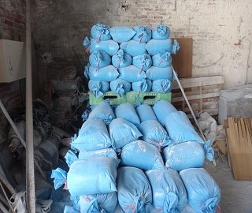
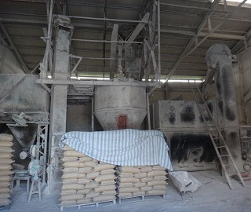
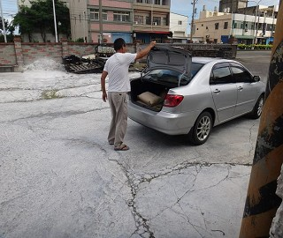
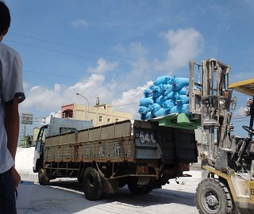
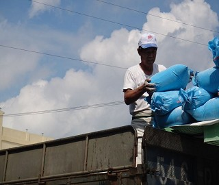
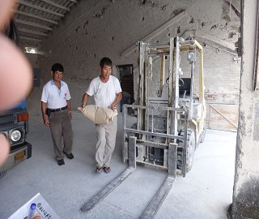
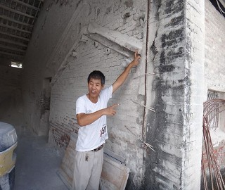
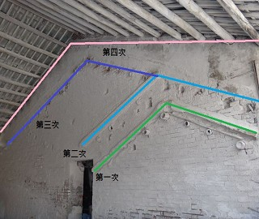
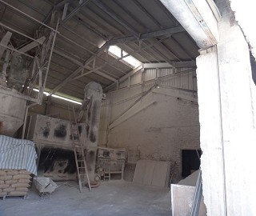
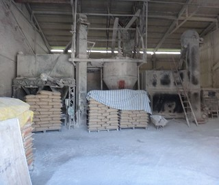

 
生石灰<藍包裝> ，熟石灰<灰包裝>。
 
 
老闆與客戶在交易，搬運石灰。
 
老闆說有改建四次，工廠才慢慢擴大營業。
 
這是永瑋實業社公司內部設施，機器有三四十年的歷史。
老闆說：石灰以前是用貝殼加熱製成，用火加熱成粉，石灰呈鹼性、可以處理廢水、中和酸鹼性，
乾燥劑是以生石灰製成的一個化學物品。
石灰國內占20% ，國外(越南、大陸)占80%
是線西唯一的石灰工廠也是線西最老的一間工廠。
客戶都是養殖漁業較多，有殺菌的功能，瞬間放入水中有高達上百度的高溫。
老闆製造化學建築、特白灰、消石灰、碳酸石灰、苦土石灰。
老闆:黃奇銓
地址：塭仔村沿海路一段112巷1號<台17線靠近草港>
工廠電話04-7580360行動電話0919-850360
<--回塭仔村首頁 |